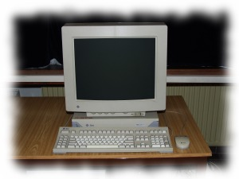
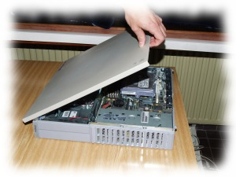

OpenBSD na SUN SparcStation4
Slovo počítač si mnohí z nás v mysli okamžite asociujú s procesormi architektúry IA-32 a IA-64 od firiem ako intel alebo AMD. S kľudným svedomím, si však dovolím tvrdiť, že IA-32 a IA-64 sú len moderné synonymá pre architektúru x86. Táto architektúra je síce najrozšírenejšia, no zďaleka však nie je jediná a už tobôž nie je najvýkonnejšia. Alternatívou k nej je napríklad architektúra RISC, do ktorej spadajú aj procesory SPARC. Procesory SPARC sú dielom firmy SUN, ktorá ich dodnes používa najmä v serverových systémoch. Mal som tú česť a do rúk sa mi dostal starší produkt tejto firmy s označením SparcStation4.

1. Hardvér
Sun SparcStation4 (ďalej len SS4), s ktorým pracujem slúžil pôvodne ako grafická pracovná stanica. Je vybavený procesorom microSPARC II pracujúcim na frekvencii 110 Mhz, má k dispozícii 64 MB RAM a SCSI disk s kapacitou 1GB. Dominantnou časťou celého SS4 je 21 palcový farebný monitor, ktorý sa ku grafickej karte pripája pomocou v PC svete atypického 13W3 konektora. Skriňa je jednou z najmenších častí zostavy a vďaka zvláštnemu spôsobu odnímania krytu si vyslúžila slangový názov “pizzabox”.

Tlačidlo na zapnutie počítača (POWER), by ste na skrini hľadali márne.
Nachádza sa totiž v pravom hornom rohu na klávesnici, ktorá obsahuje pre používateľa PC množstvo neznámych kláves a je k nej pripojená myš.
SS4 sa vypína kombináciou kláves CONTROL+META+POWER.
Či existuje nejaká kombinácia kláves aj na reštart, sa mi bohužiaľ nepodarilo zistiť.
{kind=link}
Napriek tomu, že som skriňu SS4 otvoril po rokoch používania a státia v sklade, nebol v nej takmer žiadny prach. Procesor je chladený pasívnym chladičom a špeciálny 50W zdroj príliš veľa neporiadku nenarobí.
{kind=link}
Rozhranie pre pripojenie disketovej mechaniky je síce navlas rovnaké s rozhraním na PC, no so SS4 funguje iba disketová mechanika vybavená dvojpolohovým jumprom. Netuším, akú funkciu tento jumper plní a nevedel mi to povedať ani nikto z mojich známych. Servisný manuál síce tento jumper spomína, avšak bližšie jeho význam nepopisuje. Navyše pomocou externej SCSI redukcie, veľkej skoro ako samotný pizzabox, je možné pripojiť aj klasickú IDE CD-ROM mechaniku.
2. Inštalácia operačného systému
Najpoužívanejší operačný systém na počítačoch firmy Sun je samozrejme Solaris. Ja som sa však rozhodol na SS4 nainštalovať nejakú distribúciu systému GNU/Linux. Najskôr som skúšal Aurora Linux, od ktorého ma však odradili staré verzie softvéru v distribučných balíkoch. Skúsil som teda Debian, no množstvo programov končilo výpisom chybovej hlášky o nepodporovanom systémovom volaní. Pomaly som už začínal zvažovať aj Solaris, keď prišla moja spása - OpenBSD.
OpenBSD je “pán systém”.
Nemusíte sťahovať nijaký obraz CD, pretože na inštaláciu vám postačí jedna disketa.
Vyberiete si mirror a z neho si pre vašu architektúru stiahnete obraz bootovacej diskety, ktorý je v súbore s názvom floppyXX.fs (XX je verzia systému).
V mojom prípade to bola verzia 3.8.
Tento image stačí pomocou utility rawwrite alebo dd zapísať na disketu a z nej nabootovať.
Znie to jednoducho, no v praxi to znamená, že musíte pri štarte počítača využiť klávesovú skratku STOP+A, čím zastavíte zavádzanie predchádzajúceho systému.
Bežného človeka na SS4 prekvapí neprítomnosť utility setup, ktorá sa na architektúre x86 používa na konfiguráciu parametrov biosu.
Namiesto toho je tento počítač vybavený programom zvaným OpenBoot, ktorý sa dá prirovnať k jednoduchému unixovému shellu.
Obsahuje totiž množstvo príkazov, ktoré je možné zobraziť zadaním príkazu help.
Na spustenie zavádzania systému z diskety slúži príkaz boot floppy.
Inštalácia systému OpenBSD prebieha výlučne v textovom móde a je vyčerpávajúco popísaná v dokumentácii.
Osobne si myslím, že je veľmi intuitívna.
Ťažkosti mi prvý krát spôsobilo len rozdelenie disku.
Robí sa programom disklabel a treba si zapamätať, že “oblasť a” by mala byť root partíciou, “oblasť b” swap partíciou, “oblasť c” reprezentuje celý pevný disk, a zvyšné oblasti si môžete vytvárať a priraďovať im “mount point”, podľa vlastnej chuti.
Samozrejme z jednej diskety celý systém nenainštalujete, a preto je potrebné nakonfigurovať sieťové rozhranie a pripojenie k internetu.
OpenBSD podporuje inštaláciu z CD, pevného disku, z páskového zariadenia a ftp, nfs alebo http serverov.
Tento systém sa od distribúcií Linuxu líši v tom, že pri inštalácii sú na výber len minimalistické inštalačné sety obsahujúce základný softvér.
Ďalšie programy môžete doinštalovať až v bežiacom systéme, a to buď priamo z pripravených binárnych balíkov alebo kompiláciou, z tzv. portov.
Pre minimálnu inštaláciu OpenBSD vám postačia sety bsd, baseXX.tgz a etcXX.tgz.
Ja som však k nim pridal aj nástroje potrebné pre kompiláciu - compXX.tgz - a manuálové stránky - manXX.tgz, ktoré som inštaloval priamo z ftp servera ftp.openbsd.cz.
Po stiahnutí a rozbalení inštalačných setov sa prevedie už iba zbežná konfigurácia systému, ako napríklad štart služby sshd alebo výber časového pásma.
Po dokončení inštalácie je treba zadať príkaz halt a reštartovať počítač.
Pri prvom štarte systému sa generujú kľúčové páry využívané ssh démonom. Keďže vo verzii 3.8 sa veľkosť týchto kľúčov zmenila z 1024 na 2048 bitov, trvalo ich generovanie staručkej SS4 viac než hodinu.
3. OpenBSD
Ak máte zvládnuté základy práce v niektorom unixovom operačnom systéme, budete si prácu s OpenBSD užívať. Webový server apache beží hneď po inštalácii v chrootovanom prostredí a jeho rozšírenie o podporu SSL je vďaka OpenBSD FAQ otázkou pár minút. Autori tohto systému dbajú predovšetkým na jeho bezpečnosť, o čom svedčí aj fakt, že za viac než 8 rokov bola v defaultnej inštalácii len jedna vzdialene zneužiteľná chyba.
Keď však hovorím o výhodách tohto systému, musím spomenúť aj sofistikovaný filtrovací systém PacketFilter, ktorý ponúka také vymoženosti ako synproxy, logovanie v binárnom formáte čitateľnom utilitou tcpdump, autentifikáciu pre gateway s využitím ssh, alebo jednoduchú správu a rozdeľovanie šírky pásma. Takmer všetko, čo dokážete s PF, dokáže skúsený používateľ aj s netfiltrom na linuxe. Správa pravidiel s PF je však oveľa prehľadnejšia, pretože pravidlá, ktoré sa na linuxe definujú s použitím cyklov, tu zadefinujete jednoducho s využitím zložených zátvoriek.
Čo ma však ohromilo je jednoduchosť, s akou sa dá na OpenBSD vytvoriť redundantný firewall, ktorý je dokonca schopný synchronizovať informácie o stavoch spojení obsluhovaných primárnym firewallom.
4. Záver
Sila open source softvéru je obrovská. Mnohí z nás si ju však neuvedomujú a nevenujú jej dostatočnú pozornosť. A práve vďaka projektom ako OpenBSD, môže aj taký staručký kus hardvéru, akým je Sun SparcStation4, bez najmenšieho problému fungovať napríklad ako dhcp alebo shell server.